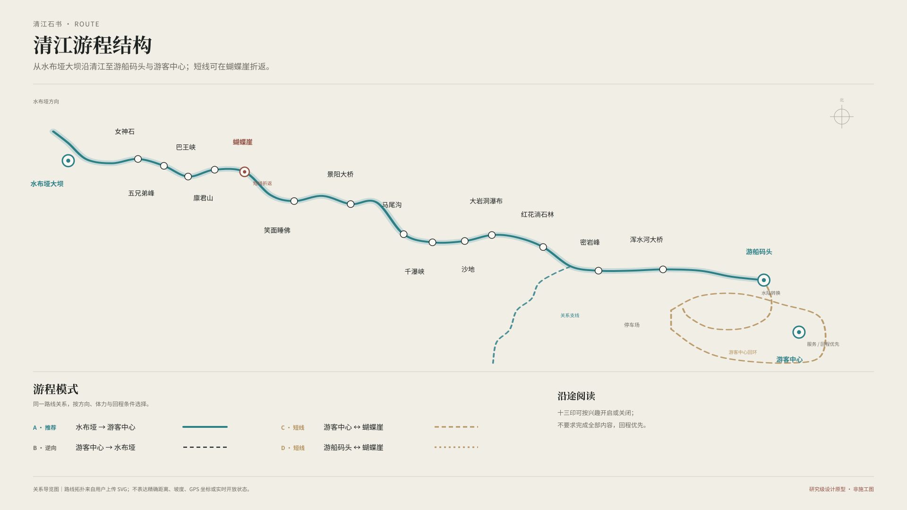
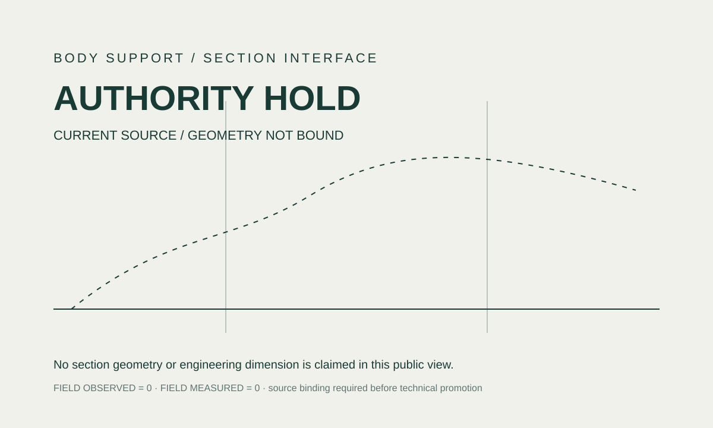
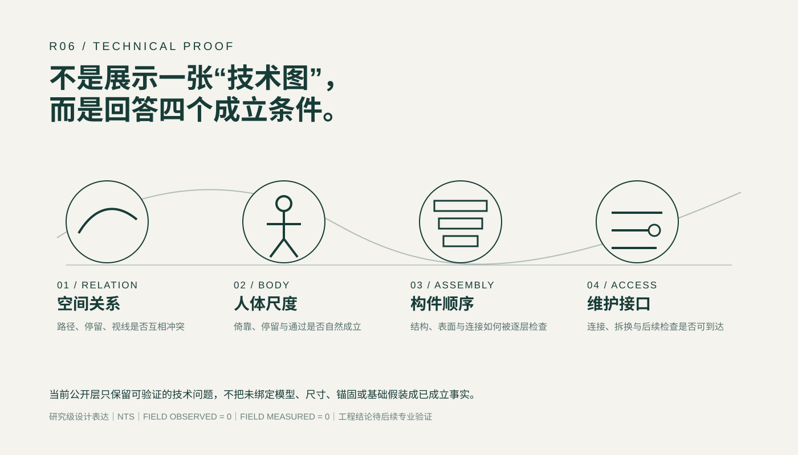
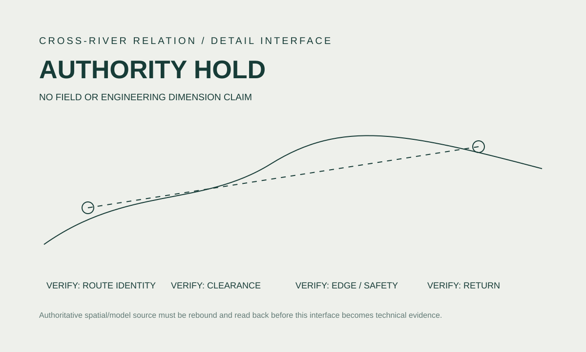
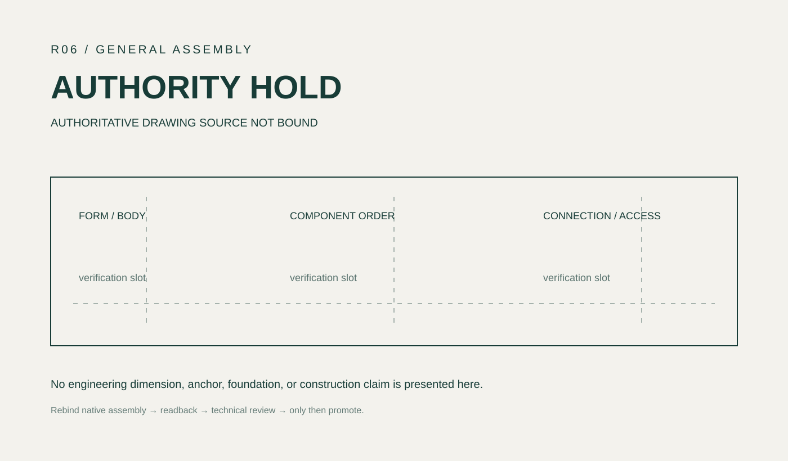
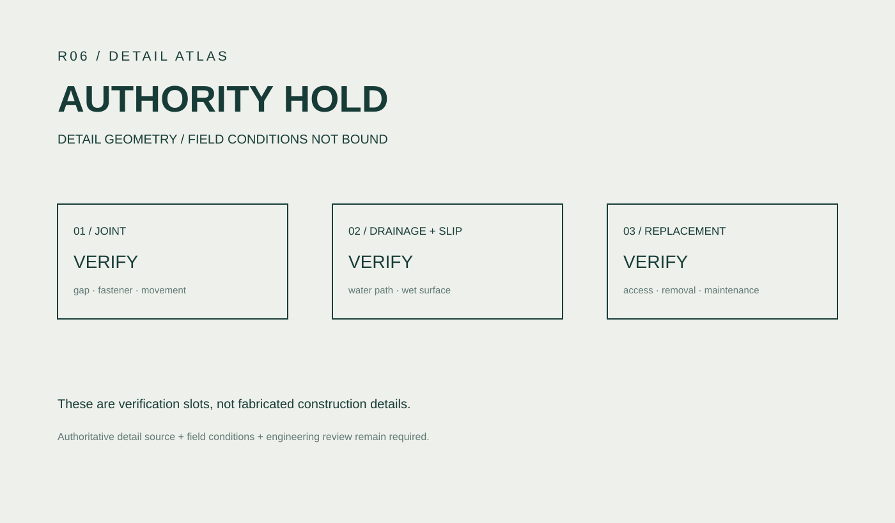

水上看
从江面内部建立连续山水、两岸与峰林的整体尺度。

QINGJIANG STONE BOOK · EXPERIENCE DESIGN
水上看，空中看，山中走；需要时，再打开一页清江。
研究级设计展示｜真实场地、路线与既有资产优先｜未把远程研究写成现场测量或施工结论
ORIGINAL MATERIAL / EXISTING ASSETS
清江已有景观、游船、索道、步行网络、路线资料、内容研究，以及已经形成的 App、实体、品牌、记忆与技术资产。新的设计工作从“读懂这些既有关系”开始，而不是再造一个虚构景区。



DESIGN QUESTION
核心矛盾不是“内容不够”，而是山水、移动、解释、身体、服务和数字界面同时争夺注意力。设计因此从内容增量转向关系重构。
DESIGN IDEA / THREE SCALES
交通不再只是接驳：游船建立河谷整体，索道建立两岸关系，步行把宏观山水转成身体尺度与局部发现。设计创意来自真实移动本身。
从江面内部建立连续山水、两岸与峰林的整体尺度。
移动视点抬升后，同时读到江、两岸、峰林与跨江关系。
速度下降，路线开始分支，身体、停留、观察与恢复成为设计尺度。
DESIGN THINKING / ATTENTION
设计把“信息多少”改写为“注意力如何交接”：完整景观先成立，游客先形成自己的判断；只有主动进入时，关系线索和解释才短暂出现，随后再次退回景观。
TASK FLOW / WORKFLOW
这里展示的是实际项目任务链，而不是通用设计方法模板。每一阶段都必须改变下一步设计判断，并能回到来源检查。
景观、官方导览、路线、文化资料、既有设计资产。
识别分支、回环、观看尺度、身体压力、回程需求。
把发现转成路线、场景、内容深度与介入强度决定。
路线体验、十三印、App、实体、品牌与记忆并行发散。
把方案放回真实游程，检查注意力、身体、服务与退场。
界面原型、人体尺度、模型、剖面、节点与构造关系。
路线一致性、材料、排水、防滑、连接、维护与异常状态。
Web、视觉、记忆与技术证明重新编排成完整作品。
OPTIONAL READING SYSTEM
路线负责怎么游，内容负责沿途可能看见什么。任何一印都可进入、跳过、改序或关闭；少读几页仍然是完整旅行。
当前选择只是一次个人阅读组合，不代表完成率；任何部分组合都成立。
DIGITAL COMPANION / GAME MAP
数字系统是一名隐性助手：帮助定向、探索、阅读、记录与回程，然后在真实景观更强时主动退场。纸图、标识与人工服务始终构成并行路径。
先判断怎么游，而不是还有多少任务。
当前位置、真实路线、Return 最明显；内容只是轻提示。
场景 → 提示 → 关系 → 深读 → 退出。
记录真实发生的路线、停留、照片和一句话。
APP OFF / JOURNEY STILL WORKS.
KEY SCENES / DIFFERENT ATTENTION
开阔停留与狭窄通过拥有相反的注意力条件，因此需要两套截然不同的介入强度。
景观先行 → 身体恢复 → 可选比较 → 短暂关系揭示 → 再看同一片河谷。
内容容量 ↑接近时减弱内容 → 进入后只保留方向 → 通过时阅读与游戏关闭 → 退出后再回望。
身体与回程 ↑PHYSICAL / BODY / SENSORY
所有实体先经过“不介入是否已经足够”的比较。只有身体恢复、感官察觉或路径使用确有需要时，才提升介入强度。

真实景观与既有设施已足够。
短倚靠、短恢复、看完继续走。
身体经过后短暂回应，再恢复安静。
更长停留，必须额外证明场地必要性。



BRAND + MEMORY
品牌不靠把 Logo 铺满现场，而通过“线、印、页、痕迹”的编辑语言贯穿地图、App、纸本、技术图与影像。高景观、高身体注意场景可以让品牌降到极轻甚至关闭。
PARTIAL IS COMPLETE.
TECHNOLOGY APPLICATION ROUTE
路线与空间事实、人体尺度、交互状态和构造逻辑分别由适合的媒介验证。模型、渲染、技术图、原型各自证明不同问题，不能互相越权。
第一方导览 / 既有资产 / 路线关系
江、两岸、索道、步行网络与场景锚点
注意力、身体、内容深度与回程状态
空间、人体、构件、连接与尺度交叉校核
地图、Reveal、状态、离线与 Return
把真实资产、设计系统和过程整合成可阅读作品


AI + 3D CREATION PROCESS
AI 概念图只承担氛围、构图和体验方向探索；任何发明的平台、栏杆、地貌、尺寸或结构都不能进入几何权威。最终设计必须回到真实资产、共享锚点、3D、剖面与节点交叉校核。
先确定景观、路线、视点和不能被 AI 改写的空间事实。
探索镜头、停留感、光影、材料气质与注意力关系；不把生成结果当最终几何。
对照来源：删掉 AI 发明的构件、地貌与不可信尺度，只保留可用于设计讨论的视觉方向。
用真实几何检查形体、身体姿态、路径占用、视线与构件关系。

同一对象在 Plan / Section / Axon / Model 中保持锚点、顺序、邻接与构件角色一致。

继续检查接缝、缓冲、紧固、排水、防滑、替换与检修，保留现场待核项。
TECHNICAL PROOF / DETAIL DEVELOPMENT
不是为了让作品看起来更工程化，而是把身体、构件、材料、连接和维护接口说清楚。远程研究可给结构体系建议与合理区间，但不伪造现场精确值。

INNOVATION POINTS
这些创新点都直接对应项目已经形成的设计决定，而不是为了展示而追加的新概念。
真实路线决定怎么走；十三印只提供可选阅读，不再把景区改造成十三站任务链。
根据景观、身体、路线压力调整 FULL / LIGHT / OFF，设计知道什么时候退出。
通过地图揭示、路线选择、关系发现和个人痕迹形成探索，而不是积分与完成率。
数字体验可增强，但纸图、导视、人工服务和真实景观共同保证基础游程独立成立。
不同人共享同一真实场景，通过阅读深度、身体支持与 Return 优先级变化适配。
AI 加速视觉探索；3D、剖面、节点与来源回读负责约束现实性，避免生成图替代设计事实。
TECHNICAL DIFFICULTIES
项目跨越景观、路线、数字、实体、品牌、模型和技术图，任何一个媒介越权都会产生新的空间或证据错误。
多分支与回环必须在地图、交互、叙事中保持一致，不能为了故事方便重新画成线性十三站。
开阔停留、移动索道和狭窄通过的注意力容量不同，不能复制同一 UI 与互动模板。
平面、剖面、轴测、3D 和效果表达必须共享同一组锚点、邻接、构件身份和来源尺寸。
生成图可能发明地貌、平台、栏杆和尺度；必须通过源图与 3D / 技术图回读逐项剔除。
排水、防滑、湿热、腐蚀、边缘、紧固、维护和替换决定实体是否真的有资格继续深化。
没有现场测量时仍继续设计，但所有未确认的坡度、净宽、基础、安全与承载必须保持为待核接口。
DESIGN EVOLUTION / PROFESSIONAL JUDGMENT
保留真正改变项目方向的取舍：哪些关系被保留、哪些视觉被重做、哪些看起来更“设计”的对象反而被降低或放弃。
叙事数量反向决定真实路线。
十三个内容对象 / 可选阅读层完成率和下一任务压过山水与回程。
探索式陪伴 / 关系发现对象可能抢走景观并制造维护负担。
不介入 → 最小支持 → 必要时再升级忽略移动、疲劳与空间压缩。
场景决定 FULL / LIGHT / OFF识别系统反客为主。
FULL / LIGHT / TRACE / OFF视觉完成度不能证明空间与工程事实。
真实景观第一，模型与 AI 各自限定证明范围
FINAL SYSTEM / RETURN
走过以后，再认出同一条江。
研究级设计｜现场路线、尺寸、安全、结构、无障碍、容量与运营状态仍需后续实地与专业验证